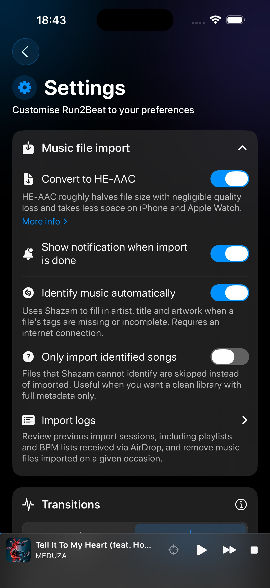

Deep dive
Build a
library
you own.
Run2Beat plays the audio files on your iPhone — MP3, M4A and WAV you import yourself. There is no streaming catalogue and nothing to rent month after month. That is the point: full control, offline forever, music that stays when a licence deal ends. This page is for anyone starting from an empty Library, or filling gaps so a long run, ride or warm-up has enough tracks to work with.
Why local files matter
A BPM list is only as good as the pool it draws from. If you mainly have mellow walking music, a 175 BPM run will feel thin. If you only have high-energy gym tracks, a five-hour marathon prep list will burn through the same handful of songs. Expanding the library — legally, with files you keep — is what makes the app feel complete.
Owning the files also means you decide the tempo rules, the equalizer, the Watch sync and the warm-up. No algorithmic playlist behind a paywall. No country list. No “this track left the catalogue”.
1. The fastest start: AirDrop from a friend
If someone you know already uses Run2Beat, ask them to send a playlist or a BPM list via AirDrop. You receive the audio files, artwork, BPM values, play order and — for BPM lists — the full recipe including warm-up. Import it, and you have a ready-made workout library without hunting the web first.
That is often the warmest way in: music curated by a training partner who already knows what works at your pace. Details of how sharing works live on the home page under AirDrop, and in the app itself under each list’s share action.
2. Legal free downloads on the open web
Independent artists and open-licence catalogues still publish tracks you can download for personal listening. Always use the official download control on the site or app — never a third-party ripper. Check the licence on each track when one is shown. Run2Beat is not affiliated with these services; we list them because they are well-known, legitimate places where free downloads actually exist.
SoundCloud
A huge home for electronic, hip-hop, phonk, drum & bass and workout remixes. Many producers enable a free download on individual tracks. Search tags such as free download, EDM workout or a genre you like; open the track; look for the official download action (often under More). If there is no download button, leave it — ripping streams is against SoundCloud’s terms and disrespects the artist.
Bandcamp
The independent storefront for high-quality files (often MP3 or FLAC). Search for free releases or pay what you want albums; enter 0 when the artist allows it and download legally. Excellent when you want better audio quality than a casual freebie, and a clean way to support artists later with a real purchase.
Free Music Archive (FMA)
A large catalogue of tracks published under Creative Commons and similar open licences — free to play, download and share within each licence’s rules. Browse by genre (Electronic / Dance, Rock, Classical, …), download from the track page, and keep an eye on attribution requirements if a licence asks for credit. No account is required for many downloads.
Jamendo
Another long-running Creative Commons music community. Artists choose whether free download is enabled per track. When it is, download from Jamendo Music for personal listening; when the button is disabled, respect that choice. Quality and genres vary widely — useful for filling quieter walks as well as brighter sessions.
What we do not recommend here
Some popular “royalty-free” libraries are built for video creators embedding music in YouTube or Twitch content. Their free licences often forbid using the files as a standalone listening library. We deliberately skip those for Run2Beat guidance — including services that limit free downloads to creator-only use. If a site’s terms talk mainly about UGC and attribution in video descriptions, read carefully before treating the MP3 as gym playlist fodder.
Before you import — one Settings check
Independent and free downloads often have thin or missing tags, and many will not match in Shazam’s catalogue. That is normal for SoundCloud promos, Bandcamp freebies and Creative Commons releases — it does not mean the file is broken.
In Settings → Music file import, leave Identify music automatically on if you want Shazam to fill gaps when it can. Only import identified songs is off by default — leave it off when you are building a library from free or lesser-known tracks. With that toggle on, any file Shazam cannot identify is skipped and never lands in the Library — easy to miss if you expected every download to appear.
That setting is useful when you only want a catalogue of fully tagged commercial rips. For the sources on this page, off is the safer default so every file you intentionally downloaded can be analysed for BPM and used in a list.

Tips for training libraries
- Match the session. Higher-energy electronic, hardstyle, bass house or drum & bass often sit well around running cadences; acoustic and chill catalogues suit walks and cool-downs. Search the genre you actually enjoy — EDM is only one example.
- Aim for volume. A five-hour BPM list needs depth. Import in batches, let BPM analysis finish, then shuffle.
- Prefer official files. Run2Beat imports MP3, M4A and WAV. Bandcamp FLAC can be converted first if needed; keep the copy you are allowed to keep.
- Fill gaps, don’t pirate. Missing a famous chart hit does not justify ripping a stream. Find an independent track in a similar tempo instead — Run2Beat will time it to your cadence.
After you download
First, confirm Only import identified songs is off (see above). Then copy the files to your iPhone (Files, iCloud Drive, AirDrop, or a USB drive), open Run2Beat’s Import Music screen, and bring them into the Library. Optional Shazam fill-in can still repair missing titles when a match exists; BPM and loudness are measured on device either way. From there, build ordinary playlists or BPM lists and sync what you need to Apple Watch.
More on the pipeline: How importing works.
The short version
Run2Beat needs music files you own. Get them from friends via AirDrop, or download legally where artists and open catalogues offer free files — SoundCloud (download enabled), Bandcamp (free / name-your-price), Free Music Archive, and Jamendo when download is allowed. Leave Only import identified songs off (the default) so unmatched free tracks still enter the Library. Keep the files, build the library, train without a streaming leash.
→ Back to the overview